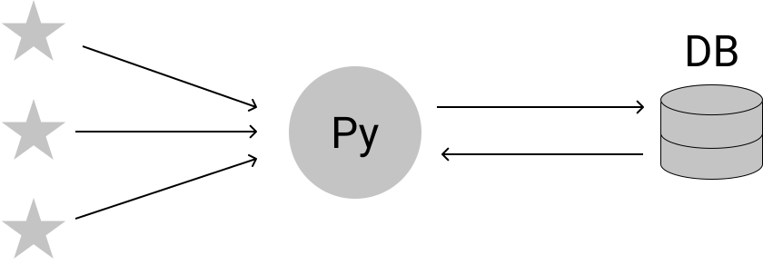

P2P for Servers
Agenda
Patterns
The Tool
Use Cases
Why?
Your Web App

Ciruela
https://github.com/tailhook/ciruela
https://ciruela.rtfd.org
Use Cases
>
ciruela edit
Questions
Presentation
Documentation
1
Space
Forward
Right, Down, Page Down
Next slide
Left, Up, Page Up
Previous slide
G
Go to slide number
P
Open presenter console
H
Toggle this help